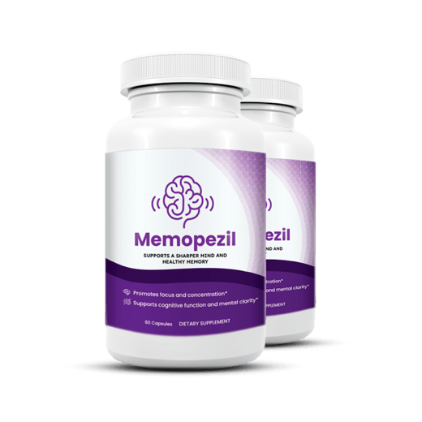
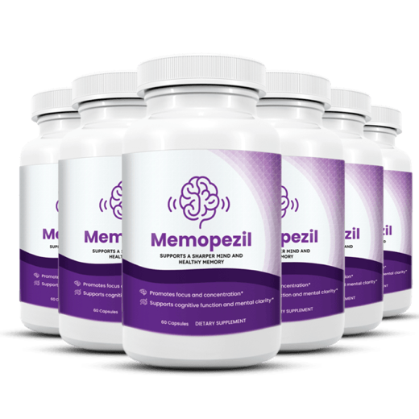
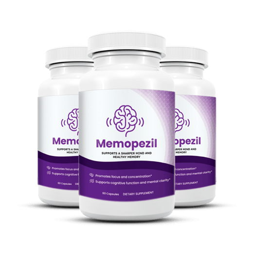

Memopezil Review 2026: Real Doses, Real Prices, and an Honest Verdict
Memopezil is one of the most talked-about memory supplements on the internet right now, and almost none of the reviews ranking for it have actually read the label. We did. Every ingredient, every milligram, checked against the clinical research it comes from.

Memory Lab verdict on Memopezil
A genuinely transparent label held back by two underdosed ingredients, and by advertising the manufacturer should never have allowed.
Key takeaways
- Five ingredients, every dose disclosed: BCAAs 540 mg, bacopa monnieri 200 mg, rhodiola rosea 100 mg, L-theanine 100 mg, panax ginseng 90 mg. No proprietary blends, which is a real advantage over Alpha Brain and most of the category.
- Two ingredients hit research doses, two don't: L-theanine and rhodiola are inside their studied ranges. Ginseng at 90 mg is well below trial levels, and 540 mg of BCAAs is a fraction of any studied amount.
- Bacopa sets the timeline, not the marketing: the ads suggest days. The research says 8 to 12 weeks. Plan accordingly, because this is the strongest practical argument for the 3 or 6-bottle package over the 2.
- Pricing is fixed and public: $79, $69 or $49 per bottle depending on package size, with a 60-day money-back guarantee on official orders.
- Talk to your doctor first if you take blood thinners, diabetes or thyroid medication, antidepressants or sedatives. Ginseng and rhodiola both interact.
Almost every "Memopezil review" currently ranking on Google has the same problem: it gives the product a score without ever opening the label. Some list ingredients that aren't on the panel at all. None of them answer the question a real buyer actually has: if I order this, am I getting anything worth $49 a month?
So we did the boring work. We pulled the disclosed doses, put each one next to the clinical literature for that ingredient, priced it per day and read the refund terms in full. Here's everything.
What is Memopezil?
Memopezil is a direct-to-consumer capsule marketed for memory, focus and mental clarity, aimed primarily at adults over 45 who have started noticing name-blanking, misplaced items and slower recall. It is stimulant-free, with no caffeine in it, and the labeled serving is two capsules daily with water, taken with or shortly before a meal.
It is sold online only, through the manufacturer's own checkout, and is produced in a US facility operating to Good Manufacturing Practice (GMP) standards. It is not stocked by Amazon, Walmart, CVS or GNC. That "official site only" model is standard for this category. It keeps the multi-bottle discount structure intact and lets the seller honor the refund window, but it also means every listing you find on a marketplace is either a reseller or a counterfeit, and neither is covered by the guarantee.
One note on naming, since readers move between our pages: this is the same formula our editors rank first in the 2026 memory supplement roundup, where we refer to products by formula description rather than brand. Same label, same checkout, same guarantee.
What's actually in Memopezil? The full label
This is where Memopezil earns most of its score. There are no proprietary blends. Every ingredient is listed with its own milligram amount, which means you can do what should be possible with any supplement and almost never is: check the dose against the studies. Here is that comparison.
| Ingredient | Dose per serving | Typical dose in research | Verdict |
|---|---|---|---|
| BCAAs (2:1:1 leucine, isoleucine, valine) Amino acids; marketed here for "mental stamina" |
540 mg | 5,000 to 10,000 mg in the sports and central-fatigue literature | Token amount The weakest ingredient in the formula |
| Bacopa monnieri extract The one ingredient here with real memory trials behind it |
200 mg | 300 mg/day of extract standardized to ~45-55% bacosides, over 12 weeks | Slightly under Two-thirds of the standard trial dose |
| Rhodiola rosea Adaptogen; studied for mental fatigue and stress |
100 mg | 100 to 576 mg/day depending on the trial | In range At the low end, but genuinely studied there |
| L-theanine Amino acid from green tea; calm, non-sedating focus |
100 mg | 100 to 200 mg/day | In range A clinically meaningful amount |
| Panax ginseng extract Studied for alertness and working memory |
90 mg | 200 to 400 mg/day in most cognition trials | Underdosed Under half the researched amount |
| Total active material | 1,030 mg | 2 capsules daily · stimulant-free · no proprietary blends | |
Read that table honestly and you get a formula that is two-thirds solid and one-third filler-by-another-name. Bacopa, rhodiola and L-theanine form a coherent stack: bacopa for cumulative memory consolidation, rhodiola for mental fatigue, theanine for the calm-focus effect. That trio is a defensible product on its own.
The BCAAs are the part we'd push back on. At 540 mg you are getting roughly a tenth of any dose used in the research, and BCAA evidence for memory in healthy adults is thin to begin with. The interesting work is in central fatigue and in traumatic brain injury, at grams per day, not milligrams. It isn't harmful, and at 540 mg it's the single largest line on the label, but it is doing more work on the label than in your bloodstream. Ginseng at 90 mg has the same problem in a smaller package.
Why do other Memopezil reviews list different ingredients?
If you've read three or four reviews you may have noticed they don't agree. One widely-circulated page lists ginkgo biloba, alpha-GPC and phosphatidylserine as Memopezil ingredients. Those are three respectable memory compounds, and none of them appear on the label. That page also lists a "90-day money-back guarantee" and cites a Trustpilot score for a product with no Trustpilot profile.
This is worth flagging because it tells you something about the review landscape rather than about the product: a large share of supplement "reviews" are generated at volume, with plausible-sounding ingredient lists assembled from what a memory formula usually contains. When a review can't get the label right, its rating is decoration.
Memopezil price: what each package actually costs
Pricing is fixed and public. There is no subscription, no auto-ship, and no hidden rebill. All three packages carry the same 60-day money-back guarantee. At the labeled two-capsule serving each bottle is a one-month supply, so the per-day figures below are the number that matters:
| Package | Per bottle | Total | Per day | Shipping | You save |
|---|---|---|---|---|---|
| 2 bottles · 2-month starter | $79 | $158 | ≈ $2.63 | Not included | Baseline |
| 3 bottles · 3-month supply | $69 | $207 | ≈ $2.30 | Free (US) | 13% |
| 6 bottles · full protocol (best value) | $49 | $294 | ≈ $1.63 | Free (US) | 38% |

2 Bottles · Starter $79/bottle Check Availability → + shipping
6 Bottles · Best Value $49/bottle Claim Discount → Free US Shipping
3 Bottles · Popular $69/bottle Claim Discount → Free US ShippingPrices shown are the manufacturer's current published rates and can change without notice.
Our honest read on which to buy: the 2-bottle package is the one we'd think twice about. Not because it's overpriced per se, but because two months is shorter than the window in which bacopa is expected to do anything measurable. You'd be paying the highest per-bottle rate for a trial too short to answer your own question. If you want to test the formula properly, three bottles is the realistic minimum; six is where the price stops being a factor at all. If you're not prepared to commit to a full course, spending nothing and working on sleep, exercise and the lifestyle basics first is a better use of the money.
Is Memopezil a scam? The honest answer
Short version: no. Memopezil is a real supplement with a published label, a real refund policy and a real product that ships. If you searched this question because an ad felt over the top, that instinct is worth separating from the product itself.
Supplements in this category are promoted by large affiliate networks, and those networks attach the same aggressive playbook to hundreds of products, good and bad. An ad that oversells tells you about whoever bought that ad. It tells you nothing about what is in the capsule. That is why this review spends its length on the label rather than on the marketing: the panel above is the part you can actually verify, and it holds up.
One claim is worth addressing directly, because it circulates about every memory supplement on the market: no over-the-counter product reverses Alzheimer's or dementia. Alzheimer's has no cure, and Memopezil's own label makes no such claim. It is sold as a memory support formula, which is what its ingredients are studied for. Judge it on that, which is a fair standard and one it meets.
Memopezil complaints: what buyers actually report
Filtering out both the paid five-star reviews and the "it's all a scam" noise, the substantive complaints cluster into three groups.
"It's too subtle." By far the most common. People coming off caffeine-heavy pre-workouts or expecting a nootropic "kick" find a stimulant-free adaptogen formula underwhelming. That's a product-category mismatch more than a defect, since the formula is deliberately non-stimulant, but the advertising encourages exactly the wrong expectation, so the disappointment is earned.
"It took too long." The second most common, and directly downstream of the first. Someone buys two bottles, takes them for six weeks, notices little, and calls it a dud. Given that bacopa's trial data is measured at 8 to 12 weeks, six weeks is not a fair test.
"I expected more." The third theme, and the most useful one to head off. This is a supportive daily formula, not a switch. Buyers who go in expecting a modest, cumulative improvement report satisfaction far more often than those expecting a transformation.
What we did not find in volume: reports of undelivered orders, unauthorized recurring charges, or refused refunds within the stated window. Those are the complaints that would matter most, and they are not there.
Side effects and who should avoid it
Memopezil is well tolerated by most people, which is what you'd expect from a stimulant-free formula at these doses. The reported issues are minor and mostly predictable from the ingredients:
- Mild digestive discomfort. The classic bacopa side effect, especially on an empty stomach. Taking both capsules with food usually resolves it entirely.
- Headache in sensitive individuals during the first week.
- Sleep disruption if taken late. Rhodiola and ginseng are mildly activating for some people. Take it in the morning.
Speak to a physician before starting if you: take blood thinners such as warfarin (ginseng interacts), take medication for diabetes (ginseng can affect blood glucose), take thyroid medication, take antidepressants, particularly MAOIs or SSRIs (rhodiola has interaction potential), take sedatives, are pregnant or breastfeeding, or are scheduled for surgery within two weeks. This is standard for any adaptogen-based formula, not a Memopezil-specific warning.
And the point no supplement page should skip: if your memory changes are sudden, accelerating, or affecting daily function, that's a doctor's appointment, not a supplement purchase. Our guide to telling normal aging from something that needs evaluation covers where that line sits.
How to take it, and what to realistically expect week by week
Two capsules daily with water, with or shortly before a meal, in the morning. Consistency matters more than timing: bacopa works by accumulation, so a missed day here and there matters more than whether you take it at 7am or 9am.
Memopezil vs. Prevagen, Neuriva, Focus Factor and Alpha Brain
The useful comparison isn't marketing claims, because everyone claims the same things. It's dose transparency, what the key ingredient actually is, and how long you have to change your mind.
| Product | Key active | Doses disclosed? | Guarantee | Notable issue |
|---|---|---|---|---|
| Memopezil | Bacopa 200 mg + rhodiola, theanine, ginseng | Yes, all five | 60 days | Ginseng and BCAAs underdosed vs. research |
| Prevagen | Apoaequorin (jellyfish protein) 10 mg | Yes (single ingredient) | Retailer-dependent | FTC and NY Attorney General sued over its memory claims |
| Neuriva | Coffee cherry extract + phosphatidylserine 100 mg | Yes | Retailer-dependent | Only two actives; company-funded evidence base |
| Focus Factor | Large multivitamin base + proprietary blend | Partially | Retailer-dependent | Kitchen-sink label; many actives at trace amounts |
| Alpha Brain | Alpha-GPC, bacopa, huperzine A | No, 3 blends | Onnit policy | Has a real clinical trial, but hides individual doses |
Where Memopezil wins: disclosure and refund length. It's one of the few products in this table where you can verify every milligram, and the only one with a 60-day guarantee that travels with the product rather than depending on which store you bought it from. Against Alpha Brain in particular, which has the better evidence base since it actually funded a trial, Memopezil's advantage is that you can see what you're taking. Against Prevagen and Neuriva, it's a broader formula at a comparable monthly cost.
Where it loses: availability. You can put Neuriva in a shopping cart at your pharmacy and you can't do that here. Selling direct is what keeps the multi-bottle pricing and the 60-day guarantee intact, but it does mean ordering online. No product in this table has a published clinical trial on its finished formula except Alpha Brain.
Pros and cons
Memopezil
Pros
- Every ingredient dose disclosed, no proprietary blends
- Bacopa monnieri, the best-evidenced memory botanical, is the anchor
- L-theanine and rhodiola at genuinely researched amounts
- Completely stimulant-free, no jitters or afternoon crash
- 60-day money-back guarantee, longer than most competitors
- $1.63/day at the 6-bottle price is competitive for the category
- Made in a US GMP-standard facility
- One-time purchase, no auto-ship subscription trap
Cons
- Panax ginseng at 90 mg is under half the studied dose
- 540 mg of BCAAs is a token amount with thin memory evidence
- Bacopa at 200 mg is below the 300 mg trial standard
- No published clinical trial on the finished formula
- Effects take 8 to 12 weeks, so the 2-bottle package is too short to judge
- Online only; not available in any retail store
- Refund window (60 days) closes before the full trial period ends
Who Memopezil is for, and who should skip it
It makes sense if: you're an adult over 45 noticing ordinary age-related slippage, you want something stimulant-free you can take alongside coffee without feeling wired, you've already got sleep and exercise reasonably handled and want to add one supplement on top, and you're willing to give it a full three months rather than a fortnight. The transparent label also makes it a reasonable pick if you like checking doses against research yourself, because you actually can here.
Skip it if: you want a same-day effect (buy a coffee and a nap instead, both of which outperform any supplement acutely), you're only prepared to try two bottles, you're on any of the medications listed above and haven't cleared it with your doctor, or you're hoping it will address a genuine diagnosis. It won't, and no supplement in this category will. If your memory concerns are significant enough that you're considering this seriously, get an evaluation first. The signs worth taking to a doctor are worth knowing.
The bottom line
Memopezil is a better product than its advertising deserves and a more modest one than its advertising claims. The label is honest, unusually so for this category. Three of its five ingredients form a coherent, evidence-backed stack. Two are there mostly to make the list look fuller. The price at six bottles is fair, the guarantee is real, and the refund process appears to work as stated.
What we can't tell you is that it will work for you, because nobody can. There's no trial on the finished formula, and the honest range of outcomes across a bacopa-based supplement runs from "noticeably sharper by week ten" to "nothing at all." What we can tell you is that the decision is knowable: the doses are public, the timeline is 8 to 12 weeks, the cost is $1.63 to $2.63 a day, and you have 60 days to change your mind. That's a fair enough deal to take on, provided you go in with the label's expectations rather than the ad's.
And if you only take one thing from this page: the ad you saw was almost certainly a lie, and that has nothing to do with what's in the bottle. Judge the label.
Check current Memopezil pricing & availability
Official checkout only. The 60-day money-back guarantee applies to orders placed here. No subscription, no auto-ship, one-time charge.
Frequently asked questions
Is Memopezil a scam?
No. It is a real supplement with a fully disclosed label, a 60-day money-back guarantee and a product that ships. Every ingredient is printed with its milligram amount, which is more than most of this category offers and more than a scam product would ever do. Affiliate networks promote supplements aggressively across the board, so an ad that oversells says something about the advertiser rather than about the formula. The panel on this page is the part worth judging.
What are the ingredients in Memopezil?
Five, all disclosed, per two-capsule serving: BCAAs in a 2:1:1 ratio (540 mg), bacopa monnieri extract (200 mg), rhodiola rosea (100 mg), L-theanine (100 mg) and panax ginseng extract (90 mg), for 1,030 mg total. No proprietary blends, no stimulants. Any review listing ginkgo biloba, alpha-GPC or phosphatidylserine is describing a formula that doesn't match the label.
How much does Memopezil cost?
Three packages: 2 bottles at $79 each ($158 total, plus shipping), 3 bottles at $69 each ($207, free US shipping) and 6 bottles at $49 each ($294, free US shipping). At two capsules a day each bottle lasts a month, so that's roughly $2.63/day at the smallest package and $1.63/day at the largest.
How long does Memopezil take to work?
Expect little in the first two weeks. Bacopa monnieri, the ingredient with the strongest memory evidence, works cumulatively, and trials measure results at 8 to 12 weeks. L-theanine and rhodiola can produce a calmer, less scattered feeling within days, but that's a stress and attention effect, not a memory one. Give it 8 to 12 weeks of uninterrupted use before deciding.
Does Memopezil have side effects?
Most commonly mild digestive discomfort, which bacopa causes on an empty stomach, and taking it with food usually fixes it. Some people get a first-week headache, and rhodiola and ginseng can be activating enough to disturb sleep if taken late. It's stimulant-free, so jitters are uncommon. Check with a physician first if you take blood thinners, diabetes or thyroid medication, antidepressants or sedatives, or if you're pregnant or breastfeeding.
Can you buy Memopezil on Amazon or in stores?
No. It's sold direct through its official checkout only, not Amazon, Walmart, CVS, Walgreens or GNC. Marketplace listings under that name are resellers or counterfeits, and buying from them voids the 60-day guarantee, which is only honored on official orders.
How does Memopezil compare to Prevagen and Neuriva?
Prevagen is a single-ingredient product built on apoaequorin, whose marketing drew an FTC and New York Attorney General lawsuit. Neuriva pairs coffee cherry extract with phosphatidylserine at a lower monthly cost. Memopezil's edge over both is full dose disclosure across five ingredients and a 60-day rather than retailer-dependent guarantee; its disadvantage is being online-only. None of the three has a published trial on its finished formula.
What is Memopezil's refund policy?
Orders through the official checkout carry a 60-day money-back guarantee, valid whether the bottles are full, partly used or empty. Since the guarantee runs 60 days from purchase but the formula needs 8 to 12 weeks to assess, start immediately on delivery and make the call around week eight rather than waiting for the trial period to close.
Related: Best memory supplements of 2026 · Bacopa monnieri: what the research shows · L-theanine for focus · Rhodiola for mental fatigue · Prevagen alternatives · Neuriva review · Is there a "Bill Gates brain pill"?